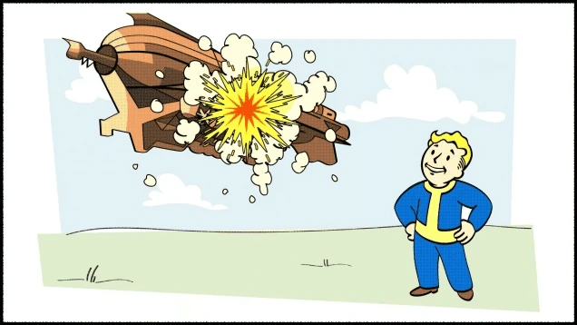
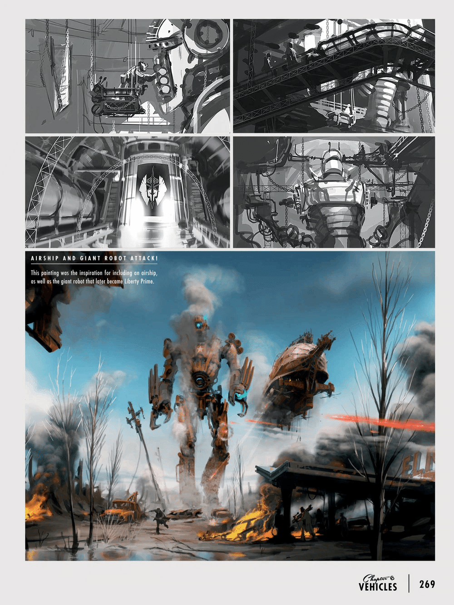

繝励Μ繝峨ぇ繧ｨ繝ｳ
谺｡荳紋ｻ｣縺ｮB.O.S. 鬟幄｡瑚飴縺ｯ縲・277蟷ｴ縺ｫ繧｢繝繝繧ｹ遨ｺ霆榊渕蝨ｰ縺ｧ繧ｨ繝ｳ繧ｯ繝ｬ繧､繝ｴ繧堤ｴ縺｣縺溷ｾ後↓隱慕函縺励∬ｨｭ險医→蟒ｺ騾縺ｫ6蟷ｴ莉･荳翫ｒ雋ｻ繧・＠縺ｾ縺励◆縲・br>B.O.S. 縺ｮ繝医ャ繝励お繧ｭ繧ｹ繝代・繝医◆縺｡縺ｯ險ｭ險医→蠢・ｦ√↑驛ｨ蜩√・蜿朱寔縺ｫ2蟷ｴ繧偵°縺代∫ｴ螢翫＆繧後◆遨ｺ霆榊渕蝨ｰ縺九ｉ繧ｹ繧ｯ繝ｩ繝・・繝｡繧ｿ繝ｫ繧・お繝ｳ繧ｯ繝ｬ繧､繝ｴ縺ｮ陬・ｙ繧貞屓蜿弱＠縺ｾ縺励◆縲・br>繝励Ο繧ｯ繧ｿ繝ｼ繝ｻ繧､繝ｳ繧ｰ繝ｩ繝縺ｮ逶｣逹｣縺ｮ荳九√％縺ｮ謌ｦ蠕悟・縺ｮ鬟幄｡瑚飴縺ｯ闊ｪ陦悟庄閭ｽ縺ｪ迥ｶ諷九ｒ邯ｭ謖√＠縺ｦ縺翫ｊ縲√え繧ｧ繧､繧ｹ繝医Λ繝ｳ繝峨↓縺翫￠繧区ｯ秘｡槭↑縺咲ｩｺ荳ｭ蜆ｪ菴肴ｧ繧・strong>B.O.S. 縺ｫ謠蝉ｾ帙＠縺ｦ縺・∪縺吶・/p>
縺薙・鬟幄｡瑚飴縺ｯ騾ｲ豌ｴ逶ｴ蠕後↓縺ｯ繧｢繝ｼ繧ｵ繝ｼ繝ｻ繝槭け繧ｽ繝ｳ縺ｮ謖・尚荳九↓縺ゅ▲縺溘ｏ縺代〒縺ｯ縺ｪ縺上∝ｽ灘・縺ｯ繧ｭ繝｣繝斐ち繝ｫ繝ｻ繧ｦ繧ｧ繧､繧ｹ繝医Λ繝ｳ繝峨・螟悶〒驕狗畑縺輔ｌ縺ｦ縺翫ｊ縲∝錐蜑阪ｂ縺ｾ縺豎ｺ縺ｾ縺｣縺ｦ縺・∪縺帙ｓ縺ｧ縺励◆縲・br>譛邨ら噪縺ｫ繝槭け繧ｽ繝ｳ縺ｮ諡・ｽ薙→縺ｪ繧翫∝ｽｼ閾ｪ霄ｫ縺ｫ繧医▲縺ｦ縲梧ｭｴ蜿ｲ繝輔ぅ繧ｯ繧ｷ繝ｧ繝ｳ・医い繝ｼ繧ｵ繝ｼ邇倶ｼ晁ｪｬ・峨阪↓逋ｻ蝣ｴ縺吶ｋ縲∫視縺ｫ縺ｪ繧矩°蜻ｽ縺ｫ縺ゅｊ蝨ｧ謾ｿ縺九ｉ豌代ｒ隗｣謾ｾ縺吶ｋ縺溘ａ縺ｫ譌・ｒ縺吶ｋ逕ｷ縺ｮ闊ｹ縺ｫ縺｡縺ｪ繧薙〒繝励Μ繝峨ぇ繧ｨ繝ｳ縺ｨ蜻ｽ蜷阪＆繧後∪縺励◆縲・br>繝ｩ繝ｳ繧ｵ繝ｼ繝ｻ繧ｭ繝｣繝励ユ繝ｳ繝ｻ繧ｱ繝ｫ繧ｺ縺ｮ謖・尚縺ｮ荳九・strong>繝励Μ繝峨ぇ繧ｨ繝ｳ縺ｯ2287蟷ｴ縺ｫ蛛ｵ蟇滄嚏縲後げ繝ｩ繝・ぅ繧ｦ繧ｹ縲阪′繧､繝ｳ繧ｹ繝・ぅ繝√Η繝ｼ繝医・蟄伜惠繧堤｢ｺ隱阪＠縺溷ｱ蜻翫ｒ蜿励￠縺ｦ騾｣驍ｦ縺ｫ蜀埼・蛯吶＆繧後ｋ縺ｾ縺ｧ縲∵擲豬ｷ蟯ｸ豐ｿ縺・ｒ蠎・￥譌・＠縺ｦ縺阪∪縺励◆縲・br>縺昴・驟榊ｙ縺ｯ縲∵雰縺ｫ蟇ｾ縺吶ｋ蜈ｨ髱｢謌ｦ莠峨・髢句ｧ九ｒB.O.S. 蜀・Κ縺ｫ遏･繧峨＠繧√ｋ蜷亥峙縺ｨ縺ｪ繧翫∪縺励◆縲・/p>
繝励Μ繝峨ぇ繧ｨ繝ｳ縺ｯ縲・strong>蟄､迢ｬ縺ｪ逕溷ｭ倩・(Sole Survivor) 縺後さ繝ｳ繝ｩ繝・ラ繝ｻ繧ｱ繝ｭ繝・げ繧定ｿｽ縺｣縺ｦ繝輔か繝ｼ繝医・繝上・繧ｲ繝ｳ縺ｫ蜈･縺｣縺溽峩蠕後↓騾｣驍ｦ縺ｫ蛻ｰ逹縺励∪縺励◆縲・br>菫ら蕗蝨ｰ縺ｨ縺励※繝懊せ繝医Φ遨ｺ貂ｯ縺碁∈縺ｰ繧後◆縺ｮ縺ｯ縲∫㏍譁吶ｒ豬ｪ雋ｻ縺帙★縺ｫ繝励Μ繝峨ぇ繧ｨ繝ｳ縺ｮ閹ｨ螟ｧ縺ｪ繧ｨ繝阪Ν繧ｮ繝ｼ髴隕√ｒ謾ｯ縺医ｋ縺溘ａ縺ｮ謌ｦ蜑阪・髮ｻ豌励す繧ｹ繝・Β縺梧錐縺ｪ繧上ｌ縺壹↓谿九▲縺ｦ縺・◆縺薙→縲√∪縺溘√・繧ｹ繝医Φ蟶り｡励∈縺ｮ謾ｻ謦・ｷ晞屬繧剃ｿ昴■縺､縺､縲∵磁霑代☆繧玖у螽√ｒ隕冶ｪ阪〒縺阪ｋ縺ｻ縺ｩ髮｢繧後◆蝣ｴ謇縺ｧ縺ゅ▲縺溘◆繧√〒縺吶・/p>
騾｣驍ｦ縺ｫ縺翫￠繧狗ｴ帑ｺ・/h3>
騾｣驍ｦ謌ｦ莠峨・譛滄俣荳ｭ縲√％縺ｮ豈崎襖縺ｯB.O.S. 縺ｮ譌苓襖縲∫ｧｻ蜍墓欠謠ｮ繧ｻ繝ｳ繧ｿ繝ｼ縲√♀繧医・譛ｬ驛ｨ縺ｨ縺励※讖溯・縺励∪縺吶・br>繝ｩ繝ｳ繧ｵ繝ｼ繝ｻ繧ｭ繝｣繝励ユ繝ｳ繝ｻ繧ｱ繝ｫ繧ｺ縺ｯ繧ｳ繝槭Φ繝峨ョ繝・く縺ｮ荳句ｱ､縺ｫ縺ゅｋ繝悶Μ繝・ず縺ｫ鬧仙惠縺励※驥取姶菴懈姶繧堤屮逹｣縺励√お繝ｫ繝繝ｼ繝ｻ繝槭け繧ｽ繝ｳ閾ｪ霄ｫ縺ｯ譛荳雁ｱ､縺ｫ螻・ｽ上＠縺ｦ縺・∪縺吶・/p>
縲悟殴縺ｮ繧ｪ繝ｼ繝繝ｼ縲阪・髟ｷ縺ｧ縺ゅｋ繝励Ο繧ｯ繧ｿ繝ｼ繝ｻ繝・ぅ繝ｼ繧ｬ繝ｳ縺ｯ縲√Γ繧､繝ｳ繝・ャ繧ｭ縺ｮ蜈ｵ蝎ｨ蠎ｫ縺ｫ諡轤ｹ繧堤ｽｮ縺・strong>繝励Μ繝峨ぇ繧ｨ繝ｳ縺ｮ蜈ｵ遶呎球蠖難ｼ医け繧ｩ繝ｼ繧ｿ繝ｼ繝槭せ繧ｿ繝ｼ・峨→縺励※豢ｻ蜍輔＠縺ｾ縺吶・br>遨ｺ貂ｯ縺ｮ陬懃ｵｦ蜃ｦ縺ｮ雋ｬ莉ｻ閠・〒縺ゅｋ繝翫う繝医・繧ｵ繝ｼ繧ｸ繧ｧ繝ｳ繝医・繧ｬ繝薙Ν縺ｯ蠖ｼ縺ｫ逶ｴ謗･蝣ｱ蜻翫ｒ陦後＞縺ｾ縺吶・br>縲檎崟縺ｮ繧ｪ繝ｼ繝繝ｼ縲阪・髟ｷ縺ｧ縺ゅｋ繝励Ο繧ｯ繧ｿ繝ｼ繝ｻ繧､繝ｳ繧ｰ繝ｩ繝縺ｯ縲√Γ繧､繝ｳ繝・ャ繧ｭ縺ｮ繝代Ρ繝ｼ繧｢繝ｼ繝槭・謨ｴ蛯吶・繧､縺ｧ蜒阪＞縺ｦ縺・∪縺吶・br>蠖ｼ螂ｳ縺ｯ繝励Μ繝峨ぇ繧ｨ繝ｳ濶ｦ蜀・♀繧医・遨ｺ貂ｯ縺ｮ荳｡譁ｹ縺ｧ縺ｮ繧ｨ繝ｳ繧ｸ繝九い繝ｪ繝ｳ繧ｰ縺ｨ繝｡繝ｳ繝・リ繝ｳ繧ｹ讌ｭ蜍吶ｒ逶｣逹｣縺励※縺・∪縺吶・br>蜴溷ｭ千ｉ縺ｮ遞ｼ蜒阪→闊ｹ縺ｮ豬ｮ謠壹ｒ邯ｭ謖√☆繧九％縺ｨ縺悟ｽｼ螂ｳ縺ｮ莉穂ｺ九〒縺吶・br>蠖ｼ螂ｳ縺ｯ縺ｾ縺溘∝ｯｾ繧､繝ｳ繧ｹ繝・ぅ繝√Η繝ｼ繝域姶逡･縺ｮ隕√〒縺ゅｋ繝ｪ繝舌ユ繧｣繝ｻ繝励Λ繧､繝縺ｮ蠕ｩ蜈・↓繧ょ叙繧顔ｵ・ｓ縺ｧ縺・∪縺吶・br>縲檎ｭ・・繧ｪ繝ｼ繝繝ｼ縲阪・髟ｷ縺ｧ縺ゅｋ繝励Ο繧ｯ繧ｿ繝ｼ繝ｻ繧ｯ繧､繝ｳ繝ｩ繝ｳ縺ｯ縲∬ｨｺ逋よ園縺ｮ蜷代°縺・↓縺ゅｋ繝｡繧､繝ｳ繝・ャ繧ｭ縺ｮ閾ｪ螳､縺九ｉ隱ｿ譟ｻ縺翫ｈ縺ｳ蝗槫庶菴懈姶繧堤屮逹｣縺励※縺・∪縺吶・br>縺吶∋縺ｦ縺ｮ繝輔ぅ繝ｼ繝ｫ繝峨・繧ｹ繧ｯ繝ｩ繧､繝悶・蠖ｼ縺ｫ蝣ｱ蜻翫ｒ陦後＞縲∝ｽｼ縺ｯ繧ｹ繧ｯ繝ｩ繧､繝悶ｄ莉悶・B.O.S. 蟾･菴懷藤縺檎樟蝣ｴ縺九ｉ謖√■蟶ｰ縺｣縺溘☆縺ｹ縺ｦ縺ｮ謚陦捺枚譖ｸ 繧貞倶ｺｺ逧・↓繝√ぉ繝・け縺励∪縺吶・/p>
繧ｨ繝ｫ繝繝ｼ縲√く繝｣繝励ユ繝ｳ縲√・繝ｭ繧ｯ繧ｿ繝ｼ縺溘■縺ｮ縺ｻ縺九↓繧ゅ・strong>繝励Μ繝峨ぇ繧ｨ繝ｳ縺ｫ縺ｯ闡怜錐縺ｪ繝｡繝ｳ繝舌・縺碁・螻槭＆繧後※縺・∪縺吶・br>B.O.S. 縺ｧ譛繧よ怏閭ｽ縺ｪ蛹ｻ蟶ｫ縺ｮ荳莠ｺ縺ｧ縺ゅｋ繝翫う繝医・繧ｭ繝｣繝励ユ繝ｳ繝ｻ繧ｱ繧､繝峨・縲√Γ繧､繝ｳ繝・ャ繧ｭ縺ｮ險ｺ逋よ園縺ｧ雋蛯ｷ蜈ｵ縺ｮ豐ｻ逋ゅｄ譁ｰ蜈ｵ縺ｮ謌ｦ髣倬←諤ｧ縺ｮ隧穂ｾ｡繧定｡後▲縺ｦ縺・∪縺吶・br>蠖ｼ縺ｯ髱槫ｸｸ縺ｫ蜴ｳ譬ｼ縺ｧ縲∽ｾ九∴縺ｰ繝代Λ繝・ぅ繝ｳ繝ｻ繝悶Λ繝ｳ繝・ぅ繧ｹ縺瑚・蜍吶∈縺ｮ蠕ｩ蟶ｰ繧貞ｸ梧悍縺励◆蝣ｴ蜷医〒繧ゅ∫音螳壹・驥崎ｦ∽ｽ懈姶・・he Nuclear Option 縺ｾ縺溘・繝ｬ繝ｼ繝ｫ繝ｭ繝ｼ繝牙・縺ｮ Mass Fusion・峨′螳御ｺ・☆繧九∪縺ｧ險ｱ蜿ｯ繧貞・縺輔↑縺・％縺ｨ縺ｧ遏･繧峨ｌ縺ｦ縺・∪縺吶・br>繧ｷ繝九い繝ｻ繧ｹ繧ｯ繝ｩ繧､繝悶・繝阪Μ繧｢縺ｯB.O.S. 逕溽黄遐皮ｩｶ驛ｨ髢縺ｮ雋ｬ莉ｻ閠・〒縺ゅｊ縲√Γ繧､繝ｳ繝・ャ繧ｭ縺ｮ譛荳雁ｱ､縺ｫ縺ゅｋ繝ｩ繝懊〒蜒阪＞縺ｦ繧､・ｽ縺ｾ縺吶・br>蠖ｼ螂ｳ縺ｯ謨ｵ・・a href="super-mutant.html" class="auto-link">繧ｹ繝ｼ繝代・繝溘Η繝ｼ繧ｿ繝ｳ繝・/a>繧・ｺｺ騾莠ｺ髢難ｼ峨・隗｣蜑悶→蛻・梵繧呈球蠖薙＠縲∝ｼｱ轤ｹ繧・怏逕ｨ縺ｪ迚ｹ諤ｧ繧定ｦ九▽縺大・縺吶％縺ｨ繧堤岼謖・＠縺ｦ縺・∪縺吶・br>縺ｾ縺溘・a href="rad-x.html" class="auto-link">Rad-X繧医ｊ繧ょｼｷ蜉帙↑譁ｰ縺励＞謾ｾ蟆・・閠先ｧ阮ｬ縺ｮ髢狗匱縺ｫ繧ょ叙繧顔ｵ・ｓ縺ｧ縺・∪縺吶′縲√◎繧後↓縺ｯ騾｣驍ｦ縺ｮ逕溽黄縺九ｉ縺ｮ譁ｰ魄ｮ縺ｪ陦豸ｲ繧ｵ繝ｳ繝励Ν縺悟ｿ・ｦ√〒縺吶・/p>
隘ｿ縺ｸ縺ｮ譌・/h3>
2296蟷ｴ縲・strong>繝励Μ繝峨ぇ繧ｨ繝ｳ縺ｯ譚ｱ豬ｷ蟯ｸ縺九ｉ隘ｿ豬ｷ蟯ｸ縺ｸ蜀埼・蛯吶＆繧後∪縺励◆縲・br>謇螻樔ｸ肴・縺ｮ繝ｭ繧ｱ繝ｼ繧ｷ繝ｧ繝ｳ縺ｫ縺ゅｋB.O.S. 蝓ｺ蝨ｰ縺ｸ縺ｨ遘ｻ蜍輔＠縲√・繝ｫ繝√ヰ繝ｼ繝芽襖髫翫〒繝翫う繝医・蟆城嚏繧帝°縺ｳ縺ｾ縺励◆縲・br>繝翫う繝医◆縺｡縺ｫ縺ｯ縺昴・蠕後√お繝ｳ繧ｯ繝ｬ繧､繝ｴ縺九ｉ縺ｮ閼ｱ襍ｰ蜈ｵ縺ｧ縺ゅｋ繧ｷ繧ｮ繝ｻ繧ｦ繧｣繝ｫ繧ｸ繧ｰ蜊壼｣ｫ繧呈骨邏｢縺吶ｋ莉ｻ蜍吶ｒ蜉ｩ縺代ｋ縺溘ａ縺ｮ繧ｹ繧ｯ繝ｯ繧､繧｢・亥ｾ楢・ｼ峨′蜑ｲ繧雁ｽ薙※繧峨ｌ縺ｾ縺励◆縲・br>蜷悟ｹｴ縺ｮ蠕悟濠縲√％縺ｮ闊ｪ遨ｺ讖溘・濶ｦ髫翫→蜈ｱ縺ｫ繝輔ぅ繝ｪ繝ｼ縺ｸ遘ｻ蜍輔＠縲・strong>B.O.S. 縺ｯ縺昴・逕ｺ繧貞頃鬆倥＠縺ｾ縺励◆縲・br>縺昴・蠕碁俣繧ゅ↑縺上げ繝ｪ繝輔ぅ繧ｹ螟ｩ譁・床縺ｫ驟榊ｙ縺輔ｌ縲√Μ繝ｼ繝ｻ繝｢繝ｫ繝・う繝ｴ繧｡邇・＞繧区眠繧ｫ繝ｪ繝輔か繝ｫ繝九い蜈ｱ蜥悟嵜・・CR・峨・谿句・縺九ｉ繧ｳ繝ｼ繝ｫ繝峨ヵ繝･繝ｼ繧ｸ繝ｧ繝ｳ謚陦薙ｒ螂ｪ蜿悶☆繧倶ｽ懈姶繧帝幕蟋九＠縺ｾ縺励◆縲・/p>
縺ｾ縺・296蟷ｴ縺ｾ縺ｧ縺ｫ縲・strong>B.O.S. 縺ｮ陬ｽ騾閭ｽ蜉帙・諡｡螟ｧ縺励※縺翫ｊ縲∫ｵ・ｹ斐・縺・￥縺､縺九・蟋牙ｦｹ濶ｦ繧貞ｻｺ騾縺励※縺・∪縺励◆縲・br>縺昴・蟷ｴ縺ｮ蠕悟濠縲・strong>繝励Μ繝峨ぇ繧ｨ繝ｳ縺ｨ蜷檎ｭ峨・險ｭ險医ｒ謖√▽蟆代↑縺上→繧・髫ｻ縺ｮ鬟幄｡瑚飴縺九ｉ縺ｪ繧句､ｧ隕乗ｨ｡縺ｪ濶ｦ髫翫′隘ｿ豬ｷ蟯ｸ縺ｧ縺ｮ謌ｦ髣倥↓遶九■莨壹▲縺ｦ縺翫ｊ縲√◎縺ｮ縺・■蟆代↑縺上→繧・髫ｻ縺悟｢懆誠縺ｾ縺溘・謦・｢懊＆繧後∪縺励◆縲・/p>
險ｭ險・/h2>
驥埼㍼40,000繝医Φ縺ｮ繝励Μ繝峨ぇ繧ｨ繝ｳ縺ｯ遑ｬ諤ｧ繝輔Ξ繝ｼ繝縺ｮ鬟幄｡瑚飴縺ｧ縺ゅｊ縲∬飴菴薙・繝輔Ξ繝ｼ繝蜀・↓縺ゅｋ5縺､縺ｮ蟾ｨ螟ｧ縺ｪ繧ｬ繧ｹ繝舌ャ繧ｰ縺ｫ繧医▲縺ｦ豬ｮ謠壹＠縺ｦ縺・∪縺吶・br>繝倥Μ繧ｦ繝縺悟ｸ悟ｰ代〒縺ゅｋ縺溘ａ縲・strong>B.O.S. 縺ｯ豬ｮ謠壹ぎ繧ｹ縺ｨ縺励※豌ｴ邏繧剃ｽｿ逕ｨ縺励※縺・∪縺吶・br>繧ｬ繧ｹ繝舌ャ繧ｰ繧・・驛ｨ縺ｫ菫晉ｮ｡縺輔ｌ縺滉ｺｺ蜩｡縲∬｣・ｙ繧貞ｮｳ縺九ｉ螳医ｋ縺溘ａ縲√Γ繧､繝ｳ繝・ャ繧ｭ縺ｯ驥崎｣・抜縺ｧ蝗ｲ縺ｾ繧後※縺・∪縺吶・br>陬・抜譚ｿ縺ｯ鬟幄｡瑚・蜉帙ｒ螟ｱ縺・％縺ｨ縺ｪ縺丞､壹￥縺ｮ謾ｻ謦・↓閠舌∴繧峨ｌ繧九ｈ縺・↓險ｭ險医＆繧後※縺翫ｊ縲∝・驛ｨ縺ｮ繧ｬ繧ｹ繝舌ャ繧ｰ縺ｯ繧ｷ繝九い繝ｻ繧ｹ繧ｯ繝ｩ繧､繝悶・逶｣逹｣荳九↓縺ゅｋ繧ｹ繧ｯ繝ｩ繧､繝悶・繝√・繝縺ｫ繧医▲縺ｦ24譎る俣菴灘宛縺ｧ繝｡繝ｳ繝・リ繝ｳ繧ｹ縺輔ｌ縲∬ｨｱ蜿ｯ縺輔ｌ縺溯ｦ∝藤莉･螟悶・遶九■蜈･繧顔ｦ∵ｭ｢縺ｨ縺ｪ縺｣縺ｦ縺・∪縺吶・br>辷・匱迚ｩ繧剃ｽｿ繧上↑縺代ｌ縺ｰ蜀・Κ縺ｮ豌ｴ邏繧堤ｴ陬ゅ・蠑慕↓縺輔○繧九％縺ｨ縺ｯ蝗ｰ髮｣縺ｧ縺吶′縲∽ｺ磯亟謗ｪ鄂ｮ縺ｨ縺励※闊ｹ菴灘､夜Κ縺ｫ縺ｯ陬ｸ轣ｫ繧定ｿ代▼縺代↑縺・％縺ｨ縺梧耳螂ｨ縺輔ｌ縺ｦ縺・∪縺吶・/p>
繝励Μ繝峨ぇ繧ｨ繝ｳ縺ｮ蠢・∮驛ｨ縺ｯ譬ｸ陞榊粋逋ｺ髮ｻ謇縺ｧ縺ゅｊ縲√す繧ｹ繝・Β縺ｸ縺ｮ髮ｻ蜉帑ｾ帷ｵｦ縺ｨ繝｡繧､繝ｳ繧ｨ繝ｳ繧ｸ繝ｳ縺ｮ鬧・虚繧定｡後▲縺ｦ縺・∪縺吶・br>闊ｹ蟆ｾ縺ｫ縺ゅｋ4縺､縺ｮ蟾ｨ螟ｧ縺ｪ繝励Ο繝壹Λ縺ｨ縲・｣幄｡檎抜譚ｿ縺ｫ蜿悶ｊ莉倥￠繧峨ｌ縺・縺､縺ｮ螟ｧ縺阪↑繧ｹ繝ｩ繧ｹ繧ｿ繝ｼ縺ｫ繧医▲縺ｦ謾ｯ縺医ｉ繧後※縺・∪縺吶・br>騾｣驍ｦ縺ｸ縺ｮ譌・・蜑阪↓縲√が繝ｪ繧ｸ繝翫Ν縺ｮ蜍募鴨貅舌・B.O.S. 縺瑚穐遨ｺ豈崎襖縺ｮ谿矩ｪｸ縺九ｉ蠑輔″謠壹￡縺滓怙譁ｰ縺ｮ譬ｸ陞榊粋繝励Λ繝ｳ繝医↓莠､謠帙＆繧後∝芦逹縺ｾ縺ｧ縺ｫ縺ｻ縺ｼ100%縺ｮ蜉ｹ邇・↓驕斐＠縺ｾ縺励◆縲・br>縺励°縺励√％縺ｮ繧医≧縺ｪ蟾ｨ螟ｧ縺ｪ鬟幄｡瑚飴繧呈ｵｮ縺九○邯壹￠繧九％縺ｨ縺ｯ繧ｷ繧ｹ繝・Β縲∫音縺ｫ蜀ｷ蜊ｴ邉ｻ縺ｫ雋諡・ｒ縺九￠縲√Γ繧､繝ｳ繝・ャ繧ｭ螟夜Κ縺ｫ縺ゅｋ4縺､縺ｮ荳ｻ隕√↑辭ｱ莠､謠帛勣繧帝夐℃縺輔○繧九◆繧√・蜀ｷ蜊ｴ譚舌ｒ蟶ｸ縺ｫ萓帷ｵｦ縺礼ｶ壹￠繧句ｿ・ｦ√′縺ゅｊ縺ｾ縺吶・br>縺ｾ縺溘√リ繝薙ご繝ｼ繧ｷ繝ｧ繝ｳ繝ｻ繝薙・繧ｳ繝ｳ縺ｫ霑代＞縺溘ａ縲√せ繝ｩ繧ｹ繧ｿ繝ｼ繧ょｮ壽悄逧・↑繝｡繝ｳ繝・リ繝ｳ繧ｹ縺悟ｿ・ｦ√〒縺吶・br>繧､繝ｳ繧ｰ繝ｩ繝縺御ｿｮ逅・ｒ蜈亥屓繧翫＠縺ｦ陦後＞縲∝次蟄千ｉ縺ｮ辯・侭繧ょ香蛻・↓縺ゅｊ縺ｾ縺吶′縲∝・蜊ｴ譚舌・萓晉┯縺ｨ縺励※讌ｵ繧√※驥崎ｦ√↑蝠城｡後〒縺ゅｊ縲∝・蜊ｴ譚舌′縺ｪ縺上↑繧後・繝励Μ繝峨ぇ繧ｨ繝ｳ縺ｯ逹髯ｸ繧剃ｽ吝о縺ｪ縺上＆繧後∵怙謔ｪ縺ｮ蝣ｴ蜷医・蠅懆誠縺ｮ蜿ｯ閭ｽ諤ｧ縺後≠繧翫∪縺吶・/p>
繝励Μ繝峨ぇ繧ｨ繝ｳ閾ｪ菴薙・謌ｦ髣倡畑縺ｫ險ｭ險医＆繧後◆繧ゅ・縺ｧ縺ｯ縺ｪ縺上∬襖霈画ｭｦ蝎ｨ繧ｷ繧ｹ繝・Β繧呈政霈峨☆繧後・騾溷ｺｦ繧剃ｽ惹ｸ九＆縺帙ｋ縺縺代〒縺吶・br>縺昴・莉｣繧上ｊ縺ｫ縲∝・螢ｫ縲√・繝ｫ繝√ヰ繝ｼ繝峨√♀繧医・迚ｩ雉・↓鬆ｼ縺｣縺ｦ閼・ｨ√↓蟇ｾ蜃ｦ縺励∪縺吶・br>鬟幄｡檎抜譚ｿ縺ｧ縺ｯ譛螟ｧ4讖溘・繝吶Ν繝√ヰ繝ｼ繝峨ｒ蜷梧凾縺ｫ謨ｴ蛯吶〒縺阪∽ｸ・′荳縺ｮ蝣ｴ蜷医・蝗樣∩陦悟虚繧偵→縺｣縺ｦ謨ｵ縺ｮ謾ｻ謦・ｒ驕ｿ縺代ｋ縺薙→縺後〒縺阪∪縺吶・br>蜀・Κ遐ｴ螢雁ｷ･菴懊ｒ髯､縺代・縲∝髪荳縺ｮ閼・ｨ√・蝗樣∩繧剃ｸ榊庄閭ｽ縺ｫ縺吶ｋ蝨ｧ蛟堤噪縺ｪ蜈亥宛謾ｻ謦・〒縺吶・br>縺昴・繧医≧縺ｪ謾ｻ謦・′謌仙粥縺吶ｋ繝√Ε繝ｳ繧ｹ縺ｯ荳蠎ｦ縺阪ｊ縺ｧ縺ゅｊ縲√◎縺・〒縺ｪ縺代ｌ縺ｰB.O.S. 縺ｯ闊ｹ繧貞些髯ｺ縺九ｉ驕縺悶￠繧九〒縺励ｇ縺・・br>繝励Μ繝峨ぇ繧ｨ繝ｳ譛螟ｧ縺ｮ髦ｲ蠕｡縺ｯ縺昴・隱ｿ謨ｴ閭ｽ蜉帙↓縺ゅｊ縺ｾ縺吶・br>逾樒ｵ後そ繝ｳ繧ｿ繝ｼ縺翫ｈ縺ｳ陬懃ｵｦ蝓ｺ蝨ｰ縺ｨ縺励※縲√◎縺ｮ繧ｻ繝ｳ繧ｵ繝ｼ縺ｨ繧ｳ繝ｳ繝斐Η繝ｼ繧ｿ繧ｷ繧ｹ繝・Β縺ｯ驥取姶繝ｦ繝九ャ繝医↓邨ｶ縺磯俣縺ｪ縺・ュ蝣ｱ繧呈署萓帙＠縲∬襖蜀・・繧ｹ繝壹・繧ｹ縺ｯ謨ｵ繧堤皮ｩｶ縺吶ｋ縺溘ａ縺ｮ繝ｩ繝懊↓螳ｹ譏薙↓霆｢謠帙〒縺阪∵姶髣倥↓縺翫＞縺ｦ縺輔ｉ縺ｪ繧句━菴肴ｧ繧偵ｂ縺溘ｉ縺励∪縺吶・/p>
繝励Μ繝峨ぇ繧ｨ繝ｳ縺ｯ隕九◆逶ｮ繧医ｊ繧ょｮ牙・諤ｧ縺ｨ菫｡鬆ｼ諤ｧ繧貞━蜈医＠縺溯ｨｭ險医〒縺ゅｋ縺薙→縺檎衍繧峨ｌ縺ｦ縺・∪縺吶′縲・strong>B.O.S. 繧ｨ繝ｳ繧ｸ繝九い繝ｪ繝ｳ繧ｰ縺ｮ蜍晏茜縺ｧ縺ゅｋ縺ｨ閠・∴繧峨ｌ縺ｦ縺翫ｊ縲√◎縺ｮ荳ｭ縺ｧ縺ｮ蜍､蜍吶・蜷崎ｪ峨→縺輔ｌ縺ｦ縺・∪縺呻ｼ医◆縺縺励・8譎る俣繧ｷ繝輔ヨ繧・・縺・・縺溘ａ縲∝ｮ滄圀縺ｮ逕滓ｴｻ縺ｮ雉ｪ縺ｯ闡励＠縺乗ｬ縺代※縺・∪縺呻ｼ峨・br>蜷崎ｪ峨ｒ謗医°縺｣縺溯・・縲∬飴螟悶・骭・誠縺ｨ縺嶺ｽ懈･ｭ縺ｫ蜀埼・螻槭＆繧後ｋ縺薙→縺ｧ莠碁㍾縺ｫ縲悟錐隱峨阪ｒ蜿励￠繧九％縺ｨ繧ゅ≠繧翫∪縺吶・br>縺薙ｌ縺ｯ繧ｱ繝ｫ繧ｺ繧ｭ繝｣繝励ユ繝ｳ縺悟･ｽ繧隕丞ｾ句ｼｷ蛹悶・譁ｹ豕輔〒縺吶・br>驛ｨ螟冶・↓縺ｨ縺｣縺ｦ縲√◎繧後・鬟幄｡瑚飴縺ｮ螳夂ｾｩ繧貞ｺ・￡繧句ｷｨ迯｣縺ｧ縺ゅｊ縲∽ｸ蝨ｰ譁ｹ縺ｫ霆埼嚏蜈ｨ菴薙ｒ驕九・縺薙→縺後〒縺阪ｋ蟄伜惠縺ｧ縺吶・/p>
繝ｬ繧､繧｢繧ｦ繝・/h2>
繝｡繧､繝ｳ繧ｯ繧ｨ繧ｹ繝・Reunions 繧帝ｲ繧√※繧ｱ繝ｭ繝・げ繧貞偵＠縲・strong>繝輔か繝ｼ繝医・繝上・繧ｲ繝ｳ縺ｮ螻倶ｸ翫∈遘ｻ蜍輔☆繧九∪縺ｧ縲・strong>繝励Μ繝峨ぇ繧ｨ繝ｳ縺ｫ繧｢繧ｯ繧ｻ繧ｹ縺吶ｋ縺薙→縺ｯ縺ｧ縺阪∪縺帙ｓ縲・br>螻倶ｸ翫↓蜃ｺ繧九→縲∝慍蝗ｳ縺ｮ隘ｿ蛛ｴ縺ｮ螻ｱ閼医ｒ雜翫∴縺ｦ鬟帶擂縺励・｣驍ｦ縺ｨ繝懊せ繝医Φ繧呈ｨｪ蛻・▲縺ｦ繝懊せ繝医Φ遨ｺ貂ｯ縺ｮ逶ｮ逧・慍縺ｫ蛻ｰ驕斐☆繧区ｧ伜ｭ舌′陦ｨ遉ｺ縺輔ｌ縺ｾ縺吶・br>縺昴・蠕後・strong>繧ｱ繝ｳ繝悶Μ繝・ず隴ｦ蟇溽ｽｲ縺ｧ繝代Λ繝・ぅ繝ｳ繝ｻ繝繝ｳ繧ｹ縺ｨ隧ｱ縺吶％縺ｨ縺ｧ Shadow of Steel 繧帝ｲ繧√ｋ縺薙→縺後〒縺阪∪縺吶・/p>
鬟幄｡檎抜譚ｿ
4縺､縺ｮ譬ｼ邏榊ｼ乗髪譟ｱ繧剃ｻ九＠縺ｦ繝峨ャ繧ｭ繝ｳ繧ｰ縺吶ｋ縲∵怙蛻昴↓繧｢繧ｯ繧ｻ繧ｹ蜿ｯ閭ｽ縺ｪ繧ｻ繧ｯ繧ｷ繝ｧ繝ｳ縺ｧ縺吶・br>繝吶Ν繝√ヰ繝ｼ繝峨・菴咲ｽｮ繧剃ｿ晄戟縺励◆縺ｾ縺ｾ縲∵髪譟ｱ縺瑚レ驛ｨ縺ｮ陬・ｽｮ縺ｨ謗･邯壹＆繧後√ｆ縺｣縺上ｊ縺ｨ繝峨ャ繧ｭ繝ｳ繧ｰ菴咲ｽｮ縺ｫ蠑輔″荳翫￡繧峨ｌ縺ｾ縺吶・br>逕ｲ譚ｿ縺ｮ蠕檎ｫｯ縺ｫ縺ｯ縲√お繝ｪ繧｢繧定ｦ倶ｸ九ｍ縺咎ｫ伜床縺ｮ闊ｪ遨ｺ邂｡蛻ｶ繝ｻ菫晉ｮ｡螳､縺後≠繧翫∪縺吶・br>蜑咲ｫｯ縺ｫ縺ｯ繧ｳ繝槭Φ繝峨ョ繝・く縺ｫ邯壹￥騾夊ｷｯ縺後≠繧翫√い繧ｵ繝ｫ繝医Λ繝ｳ繝暦ｼ医ご繝ｼ繝蜀・〒縺ｯ譬ｼ邏搾ｼ峨↓謗･邯壹＆繧後◆譛蜑埼Κ繧ｻ繧ｯ繧ｷ繝ｧ繝ｳ縺後≠繧翫∪縺吶・/p>
繧ｳ繝槭Φ繝峨ョ繝・く
3縺､縺ｮ繝ｬ繝吶Ν縺後≠繧翫∪縺吶・br>鬟幄｡檎抜譚ｿ縺九ｉ縺ｮ蜈･繧雁哨縺ｮ豁｣髱｢縺ｫ縺ｯ繝｡繧､繝ｳ繝・ャ繧ｭ縺ｫ騾壹§繧九ワ繧ｷ繧ｴ縺後≠繧翫∬飴縺ｮ豁｣髱｢縺ｮ繧ｨ繝ｪ繧｢・域姶莠我ｸｭ縺ｮ繝懊せ繝医Φ縺ｮ繧ｹ繧ｫ繧､繝ｩ繧､繝ｳ・峨ｒ隕区ｸ｡縺帙ｋ隕ｳ貂ｬ螳､縺後≠繧翫∪縺吶・br>縺薙％縺ｯ繧ｨ繝ｫ繝繝ｼ繝ｻ繧｢繝ｼ繧ｵ繝ｼ繝ｻ繝槭け繧ｽ繝ｳ縺悟･ｽ繧蝣ｴ謇縺ｧ縺吶・br>荳ｭ髢薙Ξ繝吶Ν縺ｯ闊ｹ鬥也抜譚ｿ縺ｸ縺ｮ蠕・ｩ溷ｴ謇縺翫ｈ縺ｳ菫晉ｮ｡蠎ｫ縺ｧ縺吶・br>譛荳句ｱ､縺ｫ縺ｯ繧ｱ繝ｫ繧ｺ繧ｭ繝｣繝励ユ繝ｳ縺檎屮逹｣縺吶ｋ繝悶Μ繝・ず縺後≠繧翫∬穐豕輔さ繝ｳ繝斐Η繝ｼ繧ｿ縺ｨ闊ｵ霈ｪ縺後≠繧翫∪縺吶・/p>
繝｡繧､繝ｳ繝・ャ繧ｭ
繝励Μ繝峨ぇ繧ｨ繝ｳ縺ｮ蠢・∮驛ｨ縺ｧ縺ゅｊ縲∬飴菴薙ｒ豬ｮ縺九○繧句ｷｨ螟ｧ縺ｪ繧ｬ繧ｹ繝舌ャ繧ｰ縺ｮ縺吶＄荳九↓讒狗ｯ峨＆繧後※縺・∪縺吶・
荳雁ｱ､繝ｬ繝吶Ν縺ｯ縲√ぎ繧ｹ繝舌ャ繧ｰ繧偵ョ繝・く讒矩縺ｫ謗･邯壹☆繧矩夊ｷｯ縲∬飴鬥匁･ｼ縲√♀繧医・螻区ｹ縺ｧ讒区・縺輔ｌ縺ｦ縺・∪縺吶・br>螻区ｹ縺ｮ蜑埼Κ縺ｯ荵礼ｵ・藤縺ｮ螻・ｽ丞玄縺ｨ縺励※菴ｿ逕ｨ縺輔ｌ縲∝ｯ晏ｺ翫ｄ鬟滉ｺ九お繝ｪ繧｢縲・尅螟壹↑陬・ｙ縺ｮ菫晉ｮ｡蝣ｴ謇縺後≠繧翫∪縺吶・br>蠕碁Κ縺ｯ繧ｷ繝九い繝ｻ繧ｹ繧ｯ繝ｩ繧､繝悶・繝阪Μ繧｢縺ｮ荳九〒驥取姶遐皮ｩｶ繧ｹ繝・・繧ｷ繝ｧ繝ｳ縺ｨ縺励※驕ｩ蠢懊＆繧後∵雰縺ｮ豁ｻ菴楢ｧ｣蜑悶ｄ霑ｽ蜉繝励Ο繧ｸ繧ｧ繧ｯ繝医ｒ陦後▲縺ｦ縺・∪縺吶・
荳ｭ螟ｮ繝ｬ繝吶Ν縺ｯ縲∵怙繧ょ・欧縺ｧ螟壽ｩ溯・縺ｪ驛ｨ蛻・〒縺吶・br>繧ｨ繝ｫ繝繝ｼ繝ｻ繝槭け繧ｽ繝ｳ繧偵・縺倥ａ縺ｨ縺吶ｋ繝医ャ繝励Γ繝ｳ繝舌・縺ｮ蛟句ｮ､縲√リ繧､繝医・繧ｭ繝｣繝励ユ繝ｳ繝ｻ繧ｱ繧､繝峨′驕句霧縺吶ｋ蛹ｻ蜍吝ｮ､縺ｨ蛹ｻ逋ゅΛ繝懊√・繝ｭ繧ｯ繧ｿ繝ｼ繝ｻ繧ｯ繧､繝ｳ繝ｩ繝ｳ縺檎ｮ｡逅・☆繧九い繝ｼ繧ｫ繧､繝悶・｣溷ゅ√・繝ｭ繧ｯ繧ｿ繝ｼ繝ｻ繧､繝ｳ繧ｰ繝ｩ繝縺檎屮逹｣縺吶ｋ繝代Ρ繝ｼ繧｢繝ｼ繝槭・繝ｻ繝吶う縺ｨ繝ｯ繝ｼ繧ｯ繧ｷ繝ｧ繝・・縲√◎縺励※繝励Ο繧ｯ繧ｿ繝ｼ繝ｻ繝・ぅ繝ｼ繧ｬ繝ｳ縺碁°蝟ｶ縺吶ｋ蜈ｵ遶咎Κ縺後≠繧翫∪縺吶・
荳句ｱ､繝ｬ繝吶Ν縺ｯ鬟幄｡檎抜譚ｿ縺ｮ逶ｴ荳翫↓菴咲ｽｮ縺励∽ｸｻ縺ｫ菫晉ｮ｡縺ｫ菴ｿ逕ｨ縺輔ｌ縺ｾ縺吶・br>蠕碁Κ縺ｯ繝輔か繝ｼ繝医・繧ｹ繝医Ο繝ｳ繧ｰ縺九ｉ蝗槫庶縺輔ｌ縺溘ヵ繧｡繝・ヨ繝槭Φ縺ｮ蠑ｾ阮ｬ縺ｪ縺ｩ縺ｮ驥咲↓蝎ｨ蟆ら畑縺ｧ縺吶・br>蜑埼Κ縺ｯ繧､繝ｳ繧ｰ繝ｩ繝縺ｨ繝・ぅ繝ｼ繧ｬ繝ｳ縺ｫ繧医▲縺ｦ縲・・縲・a href="tobacco.html" class="auto-link">繧ｿ繝舌さ縲√Γ繝・そ繝ｼ繧ｸ莠､謠帷畑縺ｮ繧ｿ繝ｼ繝溘リ繝ｫ繧貞ｙ縺医◆繝ｬ繧ｯ繝ｪ繧ｨ繝ｼ繧ｷ繝ｧ繝ｳ繧ｨ繝ｪ繧｢縺ｨ縺励※謨ｴ蛯吶＆繧後※縺・∪縺吶・/p>
闊ｹ鬥匁･ｼ
闊ｪ遨ｺ讖溘・譛繧ょ燕譁ｹ縺ｮ驛ｨ蛻・〒縲・ｧ仙惠縺吶ｋ蜈ｵ螢ｫ縺ｫ豈秘｡槭↑縺崎ｦ也阜縺ｨ迢呎茶閭ｽ蜉帙ｒ謠蝉ｾ帙＠縺ｾ縺吶・br>縺昴・縺溘ａ縲√Θ繝九・繧ｯ縺ｪ繧ｹ繝翫う繝代・逕ｨ菫晉ｮ｡蠎ｫ縺後≠繧翫・strong>繝√Ε繝ｼ繧ｸ繝ｻ繝ｬ繝ｼ繧ｶ繝ｼ繝ｻ繧ｹ繝翫う繝代・繝ｩ繧､繝輔Ν縺悟庶繧√ｉ繧後※縺・∪縺吶・br>縺ｾ縺溘∵姶豁ｻ縺励◆蜈・ｼ溷ｧ牙ｦｹ縺ｮ霑ｽ謔ｼ蠑上ｒ陦後≧蝣ｴ謇縺ｨ縺励※繧ゆｽｿ逕ｨ縺輔ｌ縺ｾ縺吶・/p>
逋ｻ蝣ｴ繧ｭ繝｣繝ｩ繧ｯ繧ｿ繝ｼ
蜷榊燕縺ｮ縺ゅｋ繧ｭ繝｣繝ｩ繧ｯ繧ｿ繝ｼ
繧ｨ繝ｫ繝繝ｼ繝ｻ繝槭け繧ｽ繝ｳ・・strong>B.O.S. 縺ｮ繝ｪ繝ｼ繝繝ｼ
繝翫う繝医・繧ｭ繝｣繝励ユ繝ｳ繝ｻ繧ｱ繧､繝会ｼ・strong>繝励Μ繝峨ぇ繧ｨ繝ｳ縺ｮ蛹ｻ逋ょ｣ｫ螳・
繝ｩ繝ｳ繧ｵ繝ｼ繝ｻ繧ｭ繝｣繝励ユ繝ｳ繝ｻ繧ｱ繝ｫ繧ｺ・・strong>繝励Μ繝峨ぇ繧ｨ繝ｳ縺ｮ濶ｦ髟ｷ
繝励Ο繧ｯ繧ｿ繝ｼ繝ｻ繧､繝ｳ繧ｰ繝ｩ繝・壹檎崟縺ｮ繧ｪ繝ｼ繝繝ｼ縲阪・髟ｷ縲・strong>繝励Μ繝峨ぇ繧ｨ繝ｳ縺ｮ豬ｮ謠壹ｒ邯ｭ謖√☆繧玖ｲｬ莉ｻ閠・
繝励Ο繧ｯ繧ｿ繝ｼ繝ｻ繧ｯ繧､繝ｳ繝ｩ繝ｳ・壹檎ｭ・・繧ｪ繝ｼ繝繝ｼ縲阪・髟ｷ縲∵橿陦灘屓蜿弱→繧ｹ繧ｯ繝ｩ繧､繝悶・逶｣逹｣雋ｬ莉ｻ閠・
繝励Ο繧ｯ繧ｿ繝ｼ繝ｻ繝・ぅ繝ｼ繧ｬ繝ｳ・壹悟殴縺ｮ繧ｪ繝ｼ繝繝ｼ縲阪・髟ｷ縲・strong>繝励Μ繝峨ぇ繧ｨ繝ｳ縺ｮ蜈ｵ遶呎球蠖・br>繧ｷ繝九い繝ｻ繧ｹ繧ｯ繝ｩ繧､繝悶・繝阪Μ繧｢・壻ｺｺ騾莠ｺ髢薙ｄ繝溘Η繝ｼ繧ｿ繝ｳ繝医・遐皮ｩｶ雋ｬ莉ｻ閠・/p>
迚ｹ螳壹・譚｡莉ｶ荳九〒逋ｻ蝣ｴ縺吶ｋ繝｡繝ｳ繝舌・
繝槭ョ繧｣繧ｽ繝ｳ繝ｻ繝ｪ繝ｼ・壹け繧ｨ繧ｹ繝・From Within 縺ｧ隱ｬ蠕励↓謌仙粥縺励◆蝣ｴ蜷医・br>繝代Λ繝・ぅ繝ｳ繝ｻ繝悶Λ繝ｳ繝・ぅ繧ｹ・壹け繧ｨ繧ｹ繝・The Lost Patrol 縺ｧ蠕ｩ蟶ｰ繧定ｪｬ蠕励＠縺溷ｴ蜷医・br>P.A.M.・壹け繧ｨ繧ｹ繝・Tactical Thinking 縺ｧ蜀阪・繝ｭ繧ｰ繝ｩ繝溘Φ繧ｰ縺励◆蝣ｴ蜷医・
繝励Ο繝輔ぉ繝・し繝ｼ繝ｻ繧ｹ繧ｫ繝ｩ・壹け繧ｨ繧ｹ繝・Liberty Reprimed 縺ｧ隱ｬ蠕励↓謌仙粥縺励◆蝣ｴ蜷医・/p>
闊槫床陬・/h2>蜷榊燕縺ｮ逕ｱ譚･: 繝励Μ繝峨ぇ繧ｨ繝ｳ・井ｸｭ譛溘え繧ｧ繝ｼ繝ｫ繧ｺ隱槭〒縲檎ｾ弱＠縺・｡斐阪後ワ繝ｳ繧ｵ繝縲阪・諢擾ｼ峨・縲∽ｼ晁ｪｬ荳翫・繧ｭ繝｣繝ｩ繧ｯ繧ｿ繝ｼ縺ｫ髢｢縺吶ｋ繧ｦ繧ｧ繝ｼ繝ｫ繧ｺ譁・ｭｦ縺ｫ縺翫￠繧九い繝ｼ繧ｵ繝ｼ邇九・闊ｹ縺ｮ蜷榊燕縺ｧ縺吶・/p>
繝・Ξ繝薙す繝ｪ繝ｼ繧ｺ縺ｧ縺ｮ逋ｻ蝣ｴ: 繧ｷ繝ｼ繧ｺ繝ｳ1縺ｫ逋ｻ蝣ｴ縺吶ｋB.O.S. 鬟幄｡瑚飴縺ｮ闊ｹ菴薙↓縺ｯ縲訓RYDWEN縲阪・蜷阪′蛻ｻ縺ｾ繧後※縺・∪縺吶ょ・髢句燕縺ｮ髮題ｪ瑚ｨ倅ｺ九〒縺ｯ縲・strong>繧ｭ繝｣繧ｹ繧ｦ繧ｧ繝翫Φ縲阪→繧ｭ繝｣繝励す繝ｧ繝ｳ縺御ｻ倥＆繧後※縺・∪縺励◆縺後∵悽邱ｨ縺ｧ縺ｯ荳雋ｫ縺励※繝励Μ繝峨ぇ繧ｨ繝ｳ縺ｨ縺励※逋ｻ蝣ｴ縺励※縺・∪縺吶・/p>
繧ｫ繝弱Φ縺ｮ遉ｺ蜚・/strong>: 2296蟷ｴ譎らせ縺ｧ縺薙・闊ｹ縺悟ｭ伜惠縺励・strong>B.O.S. 縺御ｾ晉┯縺ｨ縺励※豢ｻ蜍輔＠縺ｦ縺・ｋ縺薙→縺ｯ縲・strong>Fallout 4 縺ｮ繧､繝ｳ繧ｹ繝・ぅ繝√Η繝ｼ繝医ｄ繝ｬ繝ｼ繝ｫ繝ｭ繝ｼ繝峨・繧ｨ繝ｳ繝・ぅ繝ｳ繧ｰ・郁飴縺ｮ遐ｴ螢翫′莨ｴ縺・ｼ峨′豁｣蜿ｲ縺ｧ縺ｯ縺ｪ縺・庄閭ｽ諤ｧ繧堤､ｺ蜚・＠縺ｦ縺・∪縺吶・br>繝溘ル繝・ヤ繝｡繝ｳ繧・strong>B.O.S.閾ｪ霄ｫ縺ｮ繧ｨ繝ｳ繝・ぅ繝ｳ繧ｰ縺ｧ縺ゅｌ縺ｰ縲∬飴縺ｮ蟄倡ｶ壹・蜿ｯ閭ｽ縺ｧ縺吶・/p>
諢滓Φ
繝励Μ繝峨ぇ繧ｨ繝ｳ縺ｯ縲∝腰縺ｪ繧句渕蝨ｰ縺ｧ縺ｯ縺ｪ縺上∵姶蠕後・謚陦薙・邊九ｒ髮・ａ縺・b>B.O.S. 縺ｮ隱・ｊ縺昴・繧ゅ・縺ｧ縺吶・縲・br>
蝨ｧ蛟堤噪縺ｪ蟄伜惠諢・/b>: 蛻昴ａ縺ｦ騾｣驍ｦ縺ｮ遨ｺ縺ｫ蟋ｿ繧堤樟縺吶す繝ｼ繝ｳ縺ｮ貍泌・縺ｯ縲√す繝ｪ繝ｼ繧ｺ螻域欠縺ｮ縲梧橿陦薙・證ｴ蜉帙阪ｒ諢溘§縺輔○繧句錐繧ｷ繝ｼ繝ｳ縺ｧ縺吶・br>
邂｡逅・＆繧後◆荳崎・逕ｱ: 濶ｦ蜀・・繝｡繝｢繧・a href="holotape.html" class="auto-link">繝帙Ο繝・・繝・/a>縺九ｉ縺ｯ縲∝､夜Κ縺九ｉ隕九◆霈昴°縺励＆縺ｨ縺ｯ陬剰・縺ｫ縲∵･ｵ蠎ｦ縺ｮ蜀ｷ蜊ｴ譚蝉ｸ崎ｶｳ繧・℃驟ｷ縺ｪ蜍､蜍吩ｽ鍋ｳｻ縲√◎縺励※隕丞ｾ狗ｶｭ謖√・縺溘ａ縺ｮ骭・誠縺ｨ縺怜・鄂ｰ縺ｪ縺ｩ縲∫ｵ・ｹ斐・髯千阜縺ｨ髢牙｡樊─繧ょ椒髢楢ｦ九∴縺ｾ縺吶・br>
隘ｿ豬ｷ蟯ｸ縺ｸ縺ｮ蟶ｰ驍・/b>: 繝・Ξ繝薙す繝ｪ繝ｼ繧ｺ縺ｧ蜀阪・縺昴・蟋ｿ縺瑚ｦ九ｉ繧後◆縺薙→縺ｯ縲∵擲豬ｷ蟯ｸ縺九ｉ隘ｿ豬ｷ蟯ｸ縺ｸ縺ｨ蜍｢蜉帙ｒ蜀肴僑螟ｧ縺輔○縺・b>B.O.S. 縺ｮ諱舌ｋ縺ｹ縺咲ｵ・ｹ泌鴨繧堤黄隱槭▲縺ｦ縺・∪縺吶・br>
This article uses material from the 窶廢ndor窶・article on the Fallout wiki at Fandom and is licensed under the Creative Commons Attribution-Share Alike License.
TAGS: #Fallout76#Fallout4#Fallout3#Lore
蜷榊燕縺ｮ逕ｱ譚･: 繝励Μ繝峨ぇ繧ｨ繝ｳ・井ｸｭ譛溘え繧ｧ繝ｼ繝ｫ繧ｺ隱槭〒縲檎ｾ弱＠縺・｡斐阪後ワ繝ｳ繧ｵ繝縲阪・諢擾ｼ峨・縲∽ｼ晁ｪｬ荳翫・繧ｭ繝｣繝ｩ繧ｯ繧ｿ繝ｼ縺ｫ髢｢縺吶ｋ繧ｦ繧ｧ繝ｼ繝ｫ繧ｺ譁・ｭｦ縺ｫ縺翫￠繧九い繝ｼ繧ｵ繝ｼ邇九・闊ｹ縺ｮ蜷榊燕縺ｧ縺吶・/p>
繝・Ξ繝薙す繝ｪ繝ｼ繧ｺ縺ｧ縺ｮ逋ｻ蝣ｴ: 繧ｷ繝ｼ繧ｺ繝ｳ1縺ｫ逋ｻ蝣ｴ縺吶ｋB.O.S. 鬟幄｡瑚飴縺ｮ闊ｹ菴薙↓縺ｯ縲訓RYDWEN縲阪・蜷阪′蛻ｻ縺ｾ繧後※縺・∪縺吶ょ・髢句燕縺ｮ髮題ｪ瑚ｨ倅ｺ九〒縺ｯ縲・strong>繧ｭ繝｣繧ｹ繧ｦ繧ｧ繝翫Φ縲阪→繧ｭ繝｣繝励す繝ｧ繝ｳ縺御ｻ倥＆繧後※縺・∪縺励◆縺後∵悽邱ｨ縺ｧ縺ｯ荳雋ｫ縺励※繝励Μ繝峨ぇ繧ｨ繝ｳ縺ｨ縺励※逋ｻ蝣ｴ縺励※縺・∪縺吶・/p>
繧ｫ繝弱Φ縺ｮ遉ｺ蜚・/strong>: 2296蟷ｴ譎らせ縺ｧ縺薙・闊ｹ縺悟ｭ伜惠縺励・strong>B.O.S. 縺御ｾ晉┯縺ｨ縺励※豢ｻ蜍輔＠縺ｦ縺・ｋ縺薙→縺ｯ縲・strong>Fallout 4 縺ｮ繧､繝ｳ繧ｹ繝・ぅ繝√Η繝ｼ繝医ｄ繝ｬ繝ｼ繝ｫ繝ｭ繝ｼ繝峨・繧ｨ繝ｳ繝・ぅ繝ｳ繧ｰ・郁飴縺ｮ遐ｴ螢翫′莨ｴ縺・ｼ峨′豁｣蜿ｲ縺ｧ縺ｯ縺ｪ縺・庄閭ｽ諤ｧ繧堤､ｺ蜚・＠縺ｦ縺・∪縺吶・br>繝溘ル繝・ヤ繝｡繝ｳ繧・strong>B.O.S.閾ｪ霄ｫ縺ｮ繧ｨ繝ｳ繝・ぅ繝ｳ繧ｰ縺ｧ縺ゅｌ縺ｰ縲∬飴縺ｮ蟄倡ｶ壹・蜿ｯ閭ｽ縺ｧ縺吶・/p>
蝨ｧ蛟堤噪縺ｪ蟄伜惠諢・/b>: 蛻昴ａ縺ｦ騾｣驍ｦ縺ｮ遨ｺ縺ｫ蟋ｿ繧堤樟縺吶す繝ｼ繝ｳ縺ｮ貍泌・縺ｯ縲√す繝ｪ繝ｼ繧ｺ螻域欠縺ｮ縲梧橿陦薙・證ｴ蜉帙阪ｒ諢溘§縺輔○繧句錐繧ｷ繝ｼ繝ｳ縺ｧ縺吶・br>
邂｡逅・＆繧後◆荳崎・逕ｱ: 濶ｦ蜀・・繝｡繝｢繧・a href="holotape.html" class="auto-link">繝帙Ο繝・・繝・/a>縺九ｉ縺ｯ縲∝､夜Κ縺九ｉ隕九◆霈昴°縺励＆縺ｨ縺ｯ陬剰・縺ｫ縲∵･ｵ蠎ｦ縺ｮ蜀ｷ蜊ｴ譚蝉ｸ崎ｶｳ繧・℃驟ｷ縺ｪ蜍､蜍吩ｽ鍋ｳｻ縲√◎縺励※隕丞ｾ狗ｶｭ謖√・縺溘ａ縺ｮ骭・誠縺ｨ縺怜・鄂ｰ縺ｪ縺ｩ縲∫ｵ・ｹ斐・髯千阜縺ｨ髢牙｡樊─繧ょ椒髢楢ｦ九∴縺ｾ縺吶・br>
隘ｿ豬ｷ蟯ｸ縺ｸ縺ｮ蟶ｰ驍・/b>: 繝・Ξ繝薙す繝ｪ繝ｼ繧ｺ縺ｧ蜀阪・縺昴・蟋ｿ縺瑚ｦ九ｉ繧後◆縺薙→縺ｯ縲∵擲豬ｷ蟯ｸ縺九ｉ隘ｿ豬ｷ蟯ｸ縺ｸ縺ｨ蜍｢蜉帙ｒ蜀肴僑螟ｧ縺輔○縺・b>B.O.S. 縺ｮ諱舌ｋ縺ｹ縺咲ｵ・ｹ泌鴨繧堤黄隱槭▲縺ｦ縺・∪縺吶・br>